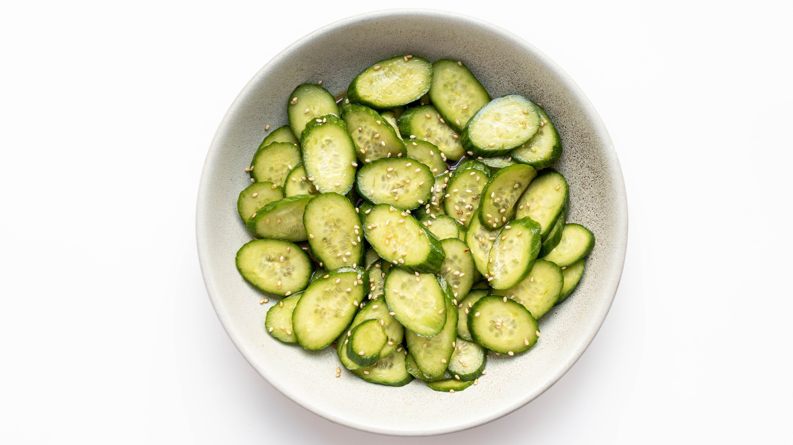

Japanese Cucumber Salad (Sunomono)

Looking for a quick and refreshing side dish? Try this amazingly simple cucumber salad! Lightly dressed in a combination of soy, rice vinegar, sugar, sesame oil, sesame oil and roasted sesame seeds, this sweet and tangy cucumber salad that comes together in five minutes.
By Vicky Pham
Ingredients
- 1 lb Japanese, Persian or English cucumbers (slice thin)
- ½ tablespoon granulated sugar
- 1 tablespoon light soy sauce
- 1 tablespoon rice vinegar
- ½ tablespoon sesame oil
- 1 tablespoon roasted sesame seeds
Instructions
- Toss everything together and enjoy immediately.
Return to main page